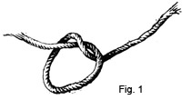
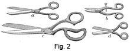
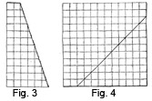

1893—School Needlework
by Olive C. Hapgood
Part I—General Suggestions
DEAR GIRLS: You have now become old enough to prepare for woman's duties; one of these is the art of sewing, which we will take up as simply as possible. By following the given directions carefully, you will become able to dress your dolls, assist your mothers in mending, make garments, fancy articles, etc.
A convenient outfit for your school sewing consists of a bag large enough to hold certain necessary materials and the garment to be made. The bag should be made of dark or medium-colored cloth, so that it may not soil easily, and should have a strong gathering tape.
The following articles are needed—
- Half a yard of bleached or half-bleached cotton cloth for a trial-piece and sample work.
- Spools of white cotton, Nos. 40-80, also one of No. 50 colored cotton for basting.
- A well-fitting silver or celluloid thimble, for the second finger of the right hand.
- An emery bag to brighten the needle, when it does not go through the cloth easily.
- A paper of Nos. 5-10 ground-down needles.
- A pinball well filled with small pins.
- A tape measure.
- A piece of wax.
- A pair of scissors, for girls in the higher classes.
Your name should be written with ink on the bag, paper of needles, spools of thread, and sample cloth. An easy way to remember the necessary articles is to let the hand represent the cloth; the thumb, the bag; the first finger, the spools of cotton; the second finger, the thimble and emery bag; the third finger, the needles and pins; and the fourth finger, the tape measure and wax.
Directions for putting away the work—
1. Before folding the work, run the needle in and out of the cloth, near the last stitches, so as to keep it secure and aid in finding the place at the next sewing lesson.
2. To fold the work, smooth it out, fold it lengthwise and narrow enough to go into the bag; then fold it the opposite way.
3. Put the thimble into the bag first, as it is apt to be forgotten.
4. After all the articles are placed in the bag, draw it up closely.
5. Wind the tape tightly around the bag until about six inches of it are left.
6. Place two fingers of the left hand over the coil of tape, and wind once over the fingers and around the bag.
7. As the fingers are withdrawn, slip the end of the tape through, and draw tightly.
If the above directions are carefully observed, no girl should report any missing article at the next lesson.
Directions for sewing—
1. Be very careful to have clean hands.
2. Sit in an erect position, never resting any part of the arm on the desk.
3. Do not fasten the work to the desk or knee.
4. Never sew without a thimble, either the top or the side of it can be used.
5. Do not put the work or thread to the mouth, as that will soil it.
6. In plain sewing, begin to sew at the end of the cloth, or at a seam, holding the part of the work not sewed in the left hand.
7. When scissors are not used, to break the thread place the left thumb-nail firmly over the last stitches; wind the thread around the right forefinger, and break the thread with the right thumb-nail.
8. Do all sewing nicely, making the stitches small and even, having the wrong side look as neat as possible, and sewing the corners with great care.
9. When obliged to take out the stitches, use the eye of a needle, and pick out one stitch at a time; in stitching, pick out the thread on one side, then on the other.
10. Before showing the work to the teacher, fasten the needle securely in the work.
We will call the fleshy or soft part of the forefinger a sewing cushion.
- What are the necessary articles for school sewing?
- Upon which finger is the thimble worn?
- For what is an emery bag used?
- Where should the needle be placed before putting away the work?
- What should first be put into the bag?
- Why should the bag be tied up carefully?
- In what condition should the hands be?
- How should a child sit while sewing?
- Should the work be fastened to the desk or knee?
- Should you ever sew without a thimble?
- Should the work or thread be put to the mouth? Why?
- In plain sewing where should you begin to sew?
- In which hand should the part of the work not sewed be held?
- How should the thread be broken?
- How ought all sewing to be done?
- Where should great care be taken?
- What is called the sewing cushion?
NEEDLES AND THREAD
Needles—
A needle is a small piece of steel, pointed at one end, and having an eye at the other to receive a thread.
Needles are of various sizes and shapes, according to the uses for which they are intended.
Three kinds of needles are used in sewing on cotton cloth: — sharps, ground-downs, and betweens; the sizes range from No.1, the largest, to No.12, the smallest. Sharps are long needles, ground-downs are shorter, and betweens are still shorter. Ground-downs are excellent for school use, as they do not bend or break easily. Betweens are used for heavy work.
Worsted and darning needles are used for yarn, and are of different sizes. Worsted needles have a long eye, and either a sharp or a blunt point. A very long needle is used in millinery work. A bodkin or tape needle has a long eye, and is used for running tape into a hem or casing.
Let us examine our paper of needles. It is assorted so that we may have needles suitable for all kinds of stitches. To open it, place a finger between the folds of the paper and separate them. Now, opening the sides and short ends which cover the needles, we find twenty-five needles in a secure case. Keep them in their places so that we may know the proper size to use for the thread or stitch. Beginning at the middle, we find three No. 5 needles, which should be used only with very coarse thread; they are suitable for sewing on boot-buttons, etc. The needles on each side are alike, so following down one side, we find two No. 6 needles, used for sewing on coarse materials; next are three No. 7 needles, suitable for hemming on towels, etc; then there are three No. 8 needles, for stitching; next are two No. 9 needles, used in hemming cotton cloth; and the last is a No. 10 needle, for very fine work.
After taking out a needle, fold and tie up the paper so that none may drop out. Never use a bent needle, as it makes uneven stitches. In passing a needle, hand the eye of the needle to the person, keeping the point towards yourself.
Thread—
A small twist made from flax, silk, cotton, or wool, is called thread. Thread made from flax is called linen thread, and is very strong. Thread made from silk is called silk or twist, and is used when sewing on nice textures. Cotton thread can be obtained in many numbers, and is used when sewing on wash goods; the finer the thread, the higher the number. Thread made from wool is called yarn, worsted, zephyr, etc., and is used for darning, canvas-work, and fancy-work.
A new spool of thread can be unfastened by slipping a pin under the thread, where it is caught in the wood. To unwind the thread, hold the spool in the left hand, with the end of the thread between two fingers. Unwind the thread until it is of the required length. Break it by holding it securely in each hand, and snapping it across the ends of the thumbs. When not using a spool of thread, keep the end of the thread fastened in the wood.
Use a piece of thread the length of the desk, or about as long as the arm. When using very fine thread, take a shorter needleful. If the thread kinks, remove the needle, and beginning at the work, draw the thread tightly between the thumb-nail and the end of the forefinger. To prevent thread from kinking, thread the needle with the end that hangs from the spool. When using double thread, as in gathering, sewing on buttons, etc., before making the knot, draw the double thread, beginning at the needle, across the wax.
Threading the needle—
1. Sit erect, bringing the needle and thread as close to the eyes as necessary.
2. Roll the end of the thread between the thumb and cushion of the forefinger, so as to twist it tightly.
3. Hold the needle steadily between the thumb and forefinger of the left hand, with the eye a little above.
4. Take the end of the thread between the thumb and forefinger of the right hand, letting about half-an-inch protrude, and put the thread through the eye of the needle.
If preferred, the thread can be held in the left hand, and the eye of the needle passed over it.
To aid in threading a round-eyed needle with worsted or loosely twisted thread, a few fibres of cotton-batting or a fine thread can be rolled over the end. Waxing the end of the thread before rolling it, is also helpful.
Threading a long-eyed needle—
1. Hold the end of the zephyr between the left thumb and forefinger, allowing half-an-inch to show.
2. Place the pointed end of the needle on the cushion of the forefinger, and over the zephyr.
3. With the left thumb fold the end of the zephyr tightly over the needle.
4. Withdraw the needle, and pass the eye of the needle over the loop of zephyr.
Knots—
To make a knot, as in Fig. 1, wind the thread around two or three fingers, and crossing it, put the end through the loop.
To bring a knot close to the end of the thread.
1. With the thumb and forefinger of the right hand, take hold of the thread a few inches from the end.
2. Wind the end around the forefinger of the left hand, about midway of the finger-nail.
3. Pressing tightly, roll the end of the thread downward on the side of the thumb, twisting it once or twice.
4. Bring the second finger upon the thumb, and over the thread.
5. Lifting the forefinger, draw up the thread with the right hand.
The knot can also be made with the right hand.
To fasten the thread in sewing, take two or three stitches in the same place, or sew back a few stitches. Fasten silk very securely as it is apt to work out.
When learning to sew, it is best to use colored thread on white cloth, as it makes the stitches plainer, and mistakes are more easily seen. For colored work, choose thread or silk a shade darker than the material, as it will work lighter. Twist is twirled the opposite way from cotton thread.
The size of the needle and thread to be used, depends upon the quality of the work. A coarse needle and thread are used for coarse work, and a fine needle and thread for fine work.
The numbers of needles and thread needed for the different kinds of stitches in cotton cloth:—
Hemming, tucking: No. 9 needle, No. 70 or 80 thread.
Running, stitching, overhanding, overcasting: No. 8 needle, No. 50 or 60 thread.
Button-holes: No. 7 or 8 needle, No. 40 or 50 thread.
Basting, gathering: No. 7 or 8 needle, No. 36 or 40 thread.
- What is a needle?
- Why is an assorted paper of needles necessary?
- Why should they be kept in their places in the paper?
- Why should the paper of needles be kept tied up?
- How should a needle be passed to any one?
- What is thread?
- What is thread made from flax called?
- What is thread made from silk called?
- What is said about cotton thread?
- What is thread made from wool called?
- How is thread broken from the spool?
- How long a piece of thread should be used?
- If it kinks, what should be done?
- Which end of the thread should be put into the needle?
- What is done to the end of the thread before threading the needle?
- What part of the finger should the thread be wound around, in order to bring a knot close to the end of the thread?
- How many times should the thread be twisted, when rolling it down the side of the thumb?
- What is the next thing to do? Next?
- How is thread fastened in sewing?
- When should a coarse needle and thread be used? A fine needle and thread?
- What size needle and thread should be used on cotton cloth for hemming? tucking? running? stitching? overhanding? overcasting? button-holes? basting? gathering?
CLOTH
Cloth is a fabric woven from cotton, wool, linen, or silk. Cotton is the cheapest, and silk the most expensive in price. From cotton are made many qualities of unbleached, half-bleached, and bleached cloth, also calicoes, ginghams, muslins, nainsooks, cambrics, etc. From wool are made flannels, cashmeres, and many varieties of dress goods. Linen cloth is made in all grades, from the finest linen lawn to heavy canvas; it is generally used for collars, cuffs, handkerchiefs, table-cloths, napkins, towels, etc. Silk is made into dress-silks, ribbons, satins, velvets etc. Soft, pliable, white cotton cloth (often called muslin) of medium quality is best for a beginner to use at first.
The threads of the cloth are called the warp and the woof. The threads running lengthwise are the warp, those running across from selvedge to selvedge are the woof; both can be easily seen on a piece of coarse crash. The warp is usually stronger than the woof, and for this reason, any part of a garment requiring strength, should be cut lengthwise of the cloth.
Cloth is woven straight, but is sometimes drawn out of shape by pressing. When you can ravel a thread the width or length of the cloth, it is straight, or will become so after washing. If it looks uneven, it can be drawn into place by stretching it on the bias. Calico, when torn, often looks very uneven, and should be pulled into shape.
The selvedge of cloth is the finished lengthwise edge, and cannot be ravelled. The raw edge is the edge that is cut or torn. A fold is the edge made by doubling one part of the cloth over the other. The nap is the shaggy substance on the surface of the cloth. To tear a piece of cloth, cut in one inch by a thread, then, holding a corner of the cut between the thumb and forefinger of each hand, roll the edges from you, and tear steadily; a fine piece of cloth must be torn carefully.
- What is cloth?
- Name some kinds of cloth made from cotton; from wool; from linen; from silk.
- What are the threads of the cloth running lengthwise of the goods called? Those running across?
- How can you tell when a piece of cotton cloth is straight?
- If it looks uneven, how can it be drawn into shape?
- What is the selvedge of cloth? The raw edge?
- What is a fold?
- How should a piece of cloth be torn?
SCISSORS AND CUTTING
A pair of scissors is an instrument used for cutting, consisting of two blades crossing each other, and moving on a pivot.
Scissors are of many sizes. Large scissors are called shears (Fig. 2, c), and small scissors with the ends of the blades rounded are called pocket scissors (Fig. 2, d), as they are convenient to carry in the pocket. In shears, the round bow is for the thumb, and the oval bow is for two of the fingers; one blade is more pointed than the other, and when cutting this blade should be held down- ward. In button-hole scissors (Fig. 2, b) a screw is attached to regulate the size of the button-hole. When passing scissors, hand the bows to the person, keeping the point towards yourself.
In order to cut straight, draw out a thread of the cloth, and cut along the line thus made (for drawing a thread, see page 116). In materials from which a thread cannot be easily drawn, fold the cloth where it is to be cut, pin the selvedges together on each side, crease, and cut on the crease. In materials in which the threads are plainly marked, either by plaids or stripes, there is no need of drawing a thread or folding the. cloth.
To cut bias, cut on a slanting line across both the warp and the woof.
To cut an exact bias, lay the selvedge or a warp thread of the cloth, on a line with a woof thread, and cut on the fold.
- What is a pair of scissors?
- Name the different kinds of scissors.
- How should shears be held?
- How can cloth be cut straight?
- How can it be cut when a thread is not easily drawn?
- How is an exact bias cut?